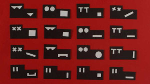
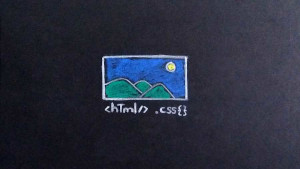

-

Blog de @flaex_
Abordar el desarrollo web desde el punto de vista de un diseñador gráfico puede ser complejo. Por lo general, en el diseño gráfico (o comunicación visual) gran parte de los elementos son tangibles ya que conocemos previamente el contenido de la pieza a diseñar, su tamaño aproximado, podemos vislumbrar qué colores y tipografía a utilizar, entre otras cosas.
-

¿Qué es el diseño web?
El surgimiento y auge de internet como medio de difusión de contenido lo ha colocado como protagonista en muchas de nuestras actividades cotidianas tales como el trabajo, los estudios, espacios de recreación y entretenimiento. Su disponibilidad inmediata y mejor uso de recursos lo ha convertido en el medio de comunicación de preferencia de muchas personas